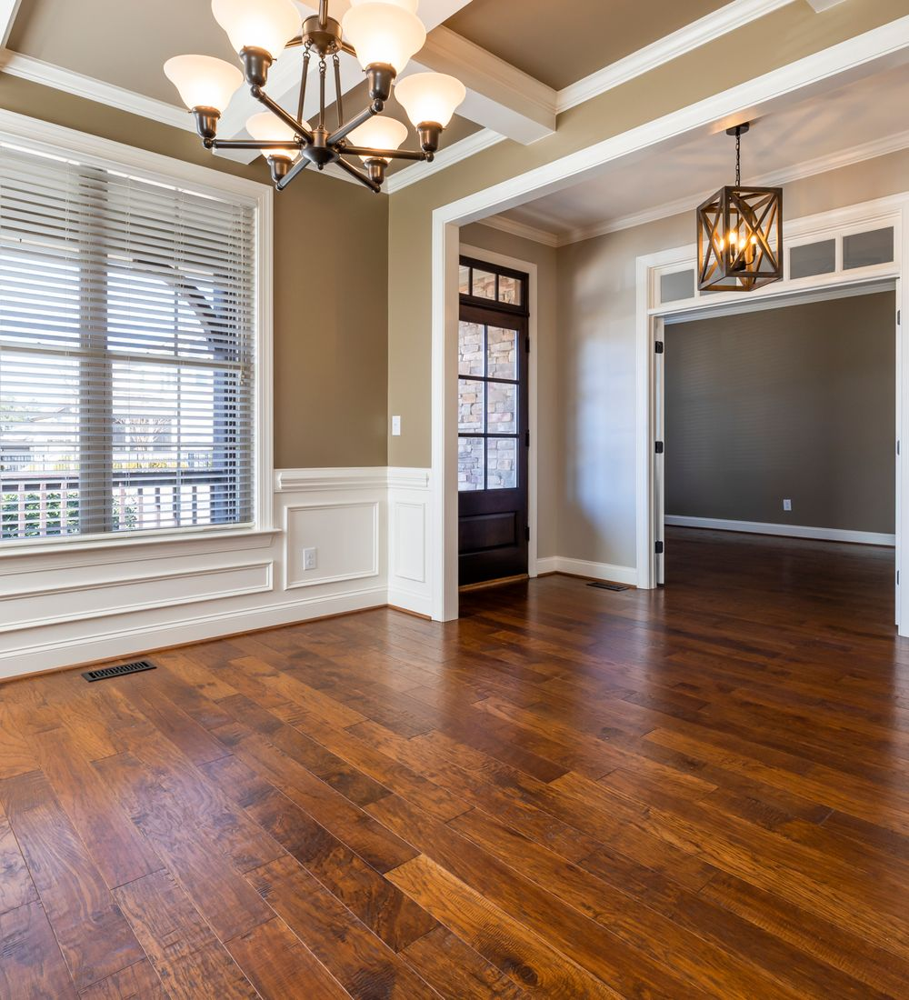
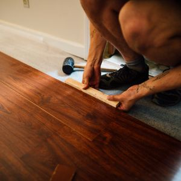
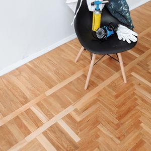

Sens de pose
Sens de pose
Quel sens de pose choisir pour son parquet ?
Cinq critères suffisent à trancher, et ils ne se valent pas. Voici l'ordre dans lequel les regarder.
Guides · Motifs · Outils
Guides, techniques et outils pour comprendre et réussir votre projet parquet — du support au motif, du calepinage à la finition.

Vous en êtes où ?
Support, humidité, ragréage, sous-couche.
Explorer 02Flottante, collée, clouée : ce qui décide vraiment.
Explorer 03Droite, diagonale, Point de Hongrie, bâton rompu.
Explorer 04Entretien, réparation, rénovation.
ExplorerStudio de pose
Changez de motif et voyez immédiatement ce que cela donne dans vos dimensions.
Guides du moment
Sens de pose
Cinq critères suffisent à trancher, et ils ne se valent pas. Voici l'ordre dans lequel les regarder.
 Sens de pose
Sens de pose
La règle la plus citée du parquet. Encore faut-il savoir ce qu'elle recouvre et quand elle cesse d'être vraie.
 Préparation
Préparation
Neuf désordres sur dix viennent du support, pas du parquet. Voici les contrôles à mener avant la première lame.
 Motifs
Motifs
Une coupe d'onglet sépare ces deux motifs. Elle change le rendu, le prix et la pose.
 Préparation
Préparation
Huit erreurs reviennent en boucle sur les chantiers. Toutes se corrigent avant la pose, aucune après.
 Comprendre
Comprendre
Le débat porte rarement sur le bon terrain : ce qui change vraiment, c'est la stabilité dimensionnelle.
Focus motif
Des lames coupées à 45°, des pointes parfaitement alignées : le motif le plus exigeant, et le plus spectaculaire dans une pièce en longueur.
Tutoriels
Accessible · 1 journée pour 20 m²

Confirmé · 1 à 2 jours pour 20 m²

Accessible · 1 à 2 heures
Inspiration


Outils
Surfaces complexes, décrochés et chutes selon le motif.
Le point complet à faire la veille du chantier.
Décrivez votre pièce, votre support et le rendu recherché en cinq étapes. Vous recevez une réponse construite, sans démarchage.